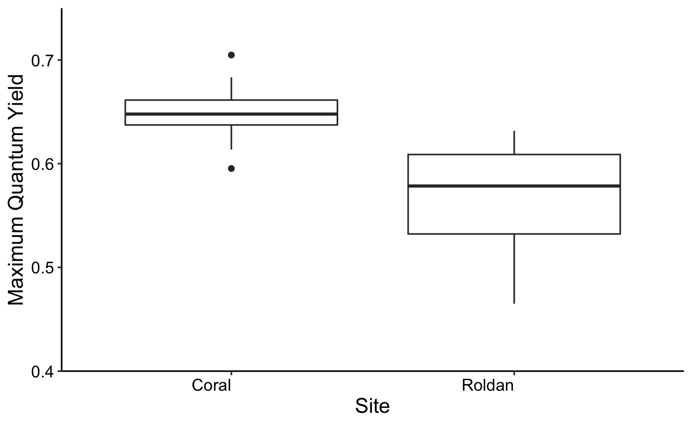
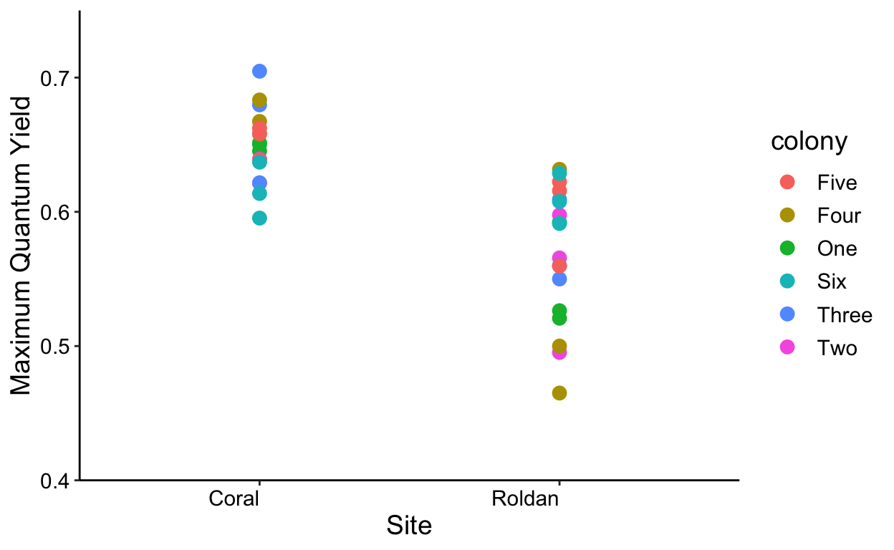
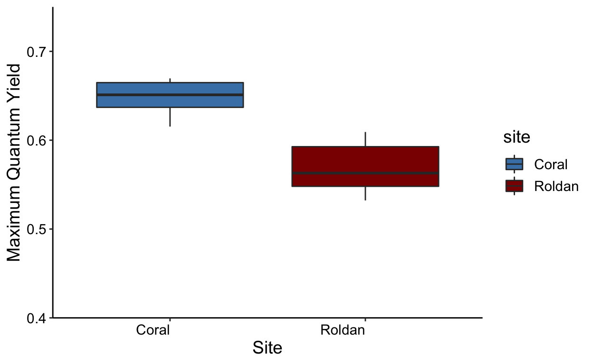
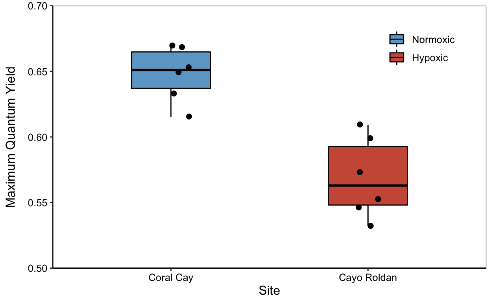
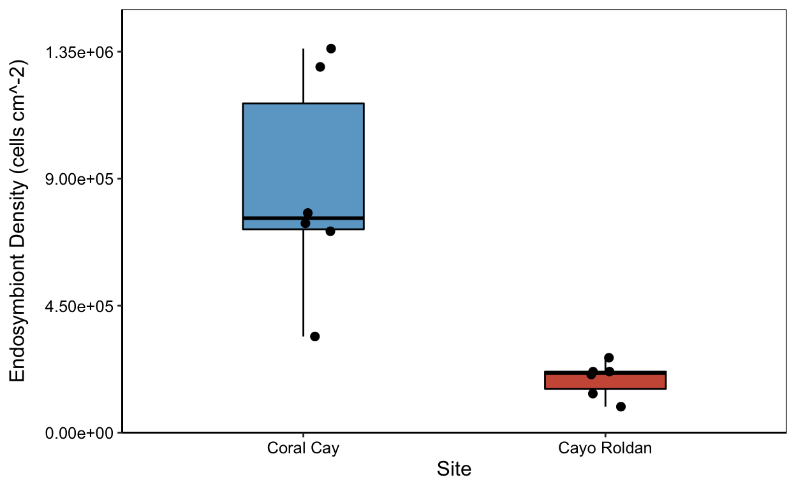
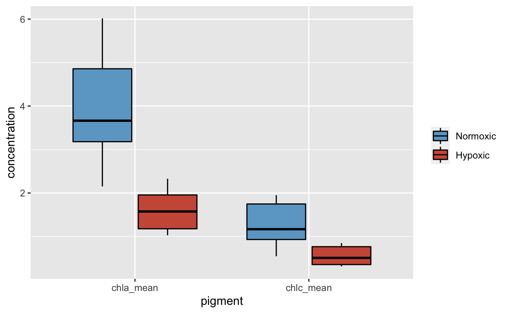
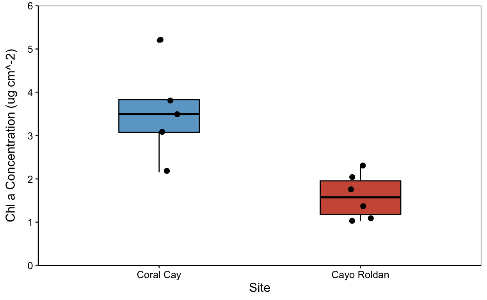

Hypoxic Reef Conditions
Conditions characteristic of a hypoxic event were first detected on Sept. 20, 2017 in Bahia Almirante on the Caribbean coast of Panama. To evaluate the environmental conditions associated with the event we conducted a series of depth profiles with a YSI multiparameter sonde, measuring dissolved oxygen (DO), temperature, chlorophyll, salinity, and pH. Measurements were taken at 83 sites across Bahía Almirante on Sept. 25, 2017. We selected two focal sites across a gradient of DO concentrations, from extremely hypoxic to normoxic (ambient DO concentrations). Cayo Roldan (hypoxic site) lies at the inner reaches of Bahia Almirante where water exchange with the open ocean is restricted, experience extreme hypoxia on the benthos during the event. Cayo Coral (normoxic site) is well-flushed with open ocean water and was used as a control site because oxygenated conditions persisted during the event.
Coral Bleaching
The common lettuce coral, Agaricia tenuifolia, was collected from each site during the hypoxic event and evaluated for bleaching through measurements of symbiont densities, pigment content, and pulse amplitude modulated (PAM) fluorometry. Three fragments from each of six colonies were collected from each site and returned to the laboratory facilities at the Smithsonian Tropical Research Institute’s Bocas del Toro Research Station. Differences in each response variable were evaluated with a linear mixed effects model, with colony as a random effect and size as a fixed effect.
Coral Community Structure
The hypoxic and normoxic sites are the location of permanent benthic monitoring. We evaluated changes in benthic community structure from four months before, during, and one year after the hypoxic event using permanent photoquadrats. At each site, permanent quadrats were photographed every 5m along one 50m permanent transect, and community structure was determined from 50 randomly overlaid points using the online platform CoralNet. Taxa were identified to the finest resolution possible, and then grouped into different functional groups for subsequent analyses.
We used nonmetric multidimensional scaling (nMDS) to visually represent benthic community structure at each time point, and evaluated changes over time with a permutational analysis of variance (PERMANOVA), with pairwise contrasts. The benthic community did not change significantly over time at the normoxic site, so changes in the coral community over time were evaluated only at the hypoxic site.
Analysis Workflow
Next, we present the workflows we used to analyze coral response variables, specifically the Pulse Amplitude Modulated (PAM) Fluorometry, Zooxanthellae, Chlorophyll a (Chla), and Chlorophyll C (Chlc) data. For each data set, we visually assess residuals, test for normality (Shapiro-Wilk Test), and test for equality of variances (Levene’s Test). In some cases, data are subsequently transformed.
Pulse Amplitude Modulated (PAM) Fluorometry
First, we test all data for assumptions of normality and homogeneity of variances based on raw data (i.e., not transformed) and residuals. Data are normal, variances hetergeneous (transform doesn’t improve). Look at distribution of data with histogram.
Non-Transformed Data
Visual Assessment

First, we run the model to generate the residuals, then look at residuals to see if they are normally distributed. This is a mixed model with fragment nested in colony and site as the fixed effect.
And then produce a histogram of the residuals.
Shapiro-Wilk Normality Test
Next, we run a normality test on residuals. The null hypothesis is that the data is normally distributed, while a p-value < 0.05 means the data is non-normally distributed.
Shapiro-Wilk normality test
data: res1
W = 0.97021, p-value = 0.4312Ok, the p-value is 0.4311851, meaning the result is not significant and the data are normally distributed.
Next, we generate QQ plots of residuals from the lme model.
Levene’s Test
And the Levene’s Test, which tests for homogeneity of variance across groups.
Levene's Test for Homogeneity of Variance (center = median)
Df F value Pr(>F)
group 1 7.9824 0.00785 **
34
---
Signif. codes: 0 '***' 0.001 '**' 0.01 '*' 0.05 '.' 0.1 ' ' 1
Bartlett test of homogeneity of variances
data: yield and site
Bartlett's K-squared = 6.3431, df = 1, p-value = 0.01178So the data is normal but not homogenous.
Mixed Effects Models
In our mixed model approach, site is the fixed effect, colony the random effect, and fragment is random nested in colony. We compared the full model with fragment dropped. The best fit model (with lowest AIC) was the model with colony dropped. But we use a model that includes fragment because it’s a necessary random effect.
When comparing models with different random effects like here—use REML = FALSE. But when not comparing use REML = TRUE (default). The full model includes site, colony, and fragment nested in colony. Colony/frag includes a term for colony alone and nests fragment in colony.
pam1 <- lmer(yield ~ site + (1|colony/frag), data = data,
REML = FALSE, na.action = na.exclude)
ranova(pam1)ANOVA-like table for random-effects: Single term deletions
Model:
yield ~ site + (1 | frag:colony) + (1 | colony)
npar logLik AIC LRT Df Pr(>Chisq)
<none> 5 65.561 -121.12
(1 | frag:colony) 4 65.561 -123.12 0 1 1
(1 | colony) 4 65.561 -123.12 0 1 1So we drop fragment nested in colony.
pam2 <- lmer(yield ~ site + (1|colony), data = data,
REML = FALSE, na.action = na.exclude)
ranova(pam2)ANOVA-like table for random-effects: Single term deletions
Model:
yield ~ site + (1 | colony)
npar logLik AIC LRT Df Pr(>Chisq)
<none> 4 65.561 -123.12
(1 | colony) 3 65.561 -125.12 -0.000000000000028422 1 1And then use the full model to account for nesting fragments.
And the final models use REML but without comparing models with different random effects.
p values for random effects.
Type II Analysis of Variance Table with Satterthwaite's method
Sum Sq Mean Sq NumDF DenDF F value Pr(>F)
site 0.056551 0.056551 1 34 34.827 0.000001156 ***
---
Signif. codes: 0 '***' 0.001 '**' 0.01 '*' 0.05 '.' 0.1 ' ' 1ANOVA-like table for random-effects: Single term deletions
Model:
yield ~ site + (1 | colony)
npar logLik AIC LRT Df Pr(>Chisq)
<none> 4 58.057 -108.11
(1 | colony) 3 58.057 -110.11 -0.000000000000014211 1 1Zooxanthellae
First, we test all data for assumptions of normality and homogeneity of variances. Based on the raw data and residuals, CR6B is an outlier and was removed. Log-transforming the data makes the data normal and homogeneous. We will look at both non-transformed transformed data.
Non-Transformed Data
Look at distribution of the raw data with histogram.
First, run the model to generate the residuals, then look at residuals to see if thay are normally distributed. Mixed model with fragment nested in colony, site as fixed effect. Yield is normally distributed, but variances not homogeneous.
Produce a histogram of the residuals.
Shapiro-Wilk Normality Test
Next, we again run a normality test on residuals. And again, the null hypothesis is that the data is normally distributed, while a p-value < 0.05 means the data is non-normally distributed.
zoox.shapiro <- shapiro.test(res2) #runs a normality test on residuals
print(zoox.shapiro) # null = normally distrubuted (P<0.05 = non-normal
Shapiro-Wilk normality test
data: res2
W = 0.9031, p-value = 0.004795We see the p-value (0.004795) is less than 0.05, and thus the data is non-normally distributed.
And a quick look at the QQ plot of residuals from lme model.

Levene’s Test
Levene's Test for Homogeneity of Variance (center = median)
Df F value Pr(>F)
group 1 13.805 0.0007486 ***
33
---
Signif. codes: 0 '***' 0.001 '**' 0.01 '*' 0.05 '.' 0.1 ' ' 1Transformed Data
Log transformation improves normality. First, we add a new column to data frame for the log transformation and check that log transformed data is added as a new column.
[1] "site" "colony" "frag" "zoox" "chla" "chlc"
[7] "yield" "zoox_log"Visual Assessment
Check normality of log-transformed data.
Check normality of log-transformed residuals
Produce a histogram of the residuals.
Shapiro-Wilk Normality Test
We then run a normality test on residuals.
Shapiro-Wilk normality test
data: res3
W = 0.96613, p-value = 0.3461Now the p-value (0.3460954) is greater than 0.05, indicating the log-transformed data is normally distributed.
QQ plots of residuals from lme model.
Levene’s Test
Levene's Test for Homogeneity of Variance (center = median)
Df F value Pr(>F)
group 1 0.0674 0.7968
33 Mixed Effects Models
For the Mixed Effects Models, site is a fixed effect, colony is random, and fragment is random nested in colony. Colony/fragment includes a term for colony alone and nests fragment in colony.
zoox1 <- lmer(zoox_log ~ site + (1|colony/frag),
data = data,
REML = FALSE,
na.action = na.exclude) #AIC 72.8756
ranova(zoox1)ANOVA-like table for random-effects: Single term deletions
Model:
zoox_log ~ site + (1 | frag:colony) + (1 | colony)
npar logLik AIC LRT Df Pr(>Chisq)
<none> 5 -31.438 72.876
(1 | frag:colony) 4 -31.438 70.876 0.00000 1 1.0000
(1 | colony) 4 -31.584 71.167 0.29147 1 0.5893Fragment nested in colony is then dropped.
zoox2 <- lmer(zoox_log ~ site + (1|colony),
data = data,
REML = FALSE,
na.action = na.exclude)
ranova(zoox2)ANOVA-like table for random-effects: Single term deletions
Model:
zoox_log ~ site + (1 | colony)
npar logLik AIC LRT Df Pr(>Chisq)
<none> 4 -31.438 70.876
(1 | colony) 3 -31.584 69.167 0.29147 1 0.5893 df AIC
zoox1 5 72.8756
zoox2 4 70.8756The Ffinal models uses REML but not comparing models with different random effects.
P-values for random effects
Type II Analysis of Variance Table with Satterthwaite's method
Sum Sq Mean Sq NumDF DenDF F value Pr(>F)
site 20.468 20.468 1 27.954 59.465 0.00000002143 ***
---
Signif. codes: 0 '***' 0.001 '**' 0.01 '*' 0.05 '.' 0.1 ' ' 1ANOVA-like table for random-effects: Single term deletions
Model:
zoox_log ~ site + (1 | colony)
npar logLik AIC LRT Df Pr(>Chisq)
<none> 4 -33.335 74.670
(1 | colony) 3 -33.611 73.223 0.55316 1 0.457Chlorophyll a (Chla)
As before, we first test all data for assumptions of normality and homogeneity of variances.
Non-Transformed Data
Visual Assessment
Look at distribution of the raw data with histogram.
First run the model to generate the residuals, then look at residuals to see if normally distributed. Mixed model with fragment nested in colony, site as fixed effect. Raw data are normal but variances not homogenous—log-transformed improves homogeneity.
Produce a histogram of the residuals.
Shapiro-Wilk Normality Test
Shapiro-Wilk normality test
data: res4
W = 0.96483, p-value = 0.3015QQ plots of residuals from lme model
Levene’s Test
Levene's Test for Homogeneity of Variance (center = median)
Df F value Pr(>F)
group 1 6.4203 0.01606 *
34
---
Signif. codes: 0 '***' 0.001 '**' 0.01 '*' 0.05 '.' 0.1 ' ' 1Data are normal but variances are not homogenous.
Transformed Data
Add a new column to dataframe for log transformation.
Check that log transformed data is added as a new column
site colony frag zoox chla chlc yield zoox_log
1 Coral One A 411086.2 2.597060 0.5928972 0.6503333 12.92656
2 Coral One B 199325.3 1.235098 0.4116325 0.6453333 12.20269
3 Coral One C 411812.2 2.620320 0.6300991 0.6513333 12.92832
4 Coral Two A 1089420.7 4.557184 1.1952204 0.6393333 13.90116
5 Coral Two B 353670.7 1.852745 0.6181671 0.6213333 12.77612
6 Coral Two C 891722.1 2.815479 0.7507814 0.6383333 13.70091
chla_log
1 0.9543802
2 0.2111501
3 0.9632964
4 1.5167048
5 0.6166685
6 1.0351322[1] "site" "colony" "frag" "zoox" "chla" "chlc"
[7] "yield" "zoox_log" "chla_log"Visual Assessment
Check normality of log-transformed data.
Check normality of log-transformed residuals.
Produce a histogram of the residuals.
Shapiro-Wilk Normality Test
chlalog.shapiro <- shapiro.test(res7) #runs a normality test on residuals
print(chlalog.shapiro) # null = normally distrubuted (P<0.05 = non-normal
Shapiro-Wilk normality test
data: res7
W = 0.95611, p-value = 0.1627QQ plots of residuals from lme model.
Levene’s Test
Levene's Test for Homogeneity of Variance (center = median)
Df F value Pr(>F)
group 1 0.1043 0.7487
34 Mixed Model Effects
Site is fixed effect, colony is random, fragment is random nested in colony on log transformed data. Colony/frag includes a term for colony alone and nests fragment in colony.
chla_log1 <- lmer(chla_log ~ site+(1|colony/frag),
data = data,
REML = FALSE,
na.action = na.exclude) #AIC 55.11567
ranova(chla_log1)ANOVA-like table for random-effects: Single term deletions
Model:
chla_log ~ site + (1 | frag:colony) + (1 | colony)
npar logLik AIC LRT Df Pr(>Chisq)
<none> 5 -22.558 55.116
(1 | frag:colony) 4 -22.558 53.116 0.0000 1 1.0000
(1 | colony) 4 -23.274 54.549 1.4333 1 0.2312Fragment nested in colony dropped.
chla_log2 <- lmer(chla_log ~ site + (1|colony),
data = data,
REML = FALSE,
na.action = na.exclude)
ranova(chla_log2)ANOVA-like table for random-effects: Single term deletions
Model:
chla_log ~ site + (1 | colony)
npar logLik AIC LRT Df Pr(>Chisq)
<none> 4 -22.558 53.116
(1 | colony) 3 -23.274 52.549 1.4333 1 0.2312 df AIC
chla_log1 5 55.11567
chla_log2 4 53.11567Final models uses REML—not comparing models with different random effects.
p values for random effects.
finalchla_logrand <- ranova(finalchla_log)
chla_log.table <- anova(finalchla_log, type = 2) #ANOVA table
chla_log.tableType II Analysis of Variance Table with Satterthwaite's method
Sum Sq Mean Sq NumDF DenDF F value Pr(>F)
site 7.508 7.508 1 29 39.802 0.0000006851 ***
---
Signif. codes: 0 '***' 0.001 '**' 0.01 '*' 0.05 '.' 0.1 ' ' 1ANOVA-like table for random-effects: Single term deletions
Model:
chla_log ~ site + (1 | colony)
npar logLik AIC LRT Df Pr(>Chisq)
<none> 4 -24.908 57.816
(1 | colony) 3 -25.843 57.687 1.871 1 0.1714Chlorophyll c (Chlc)
First testing all data for assumptions of normality and homogeneity of variances. Based on raw data and residuals. Data need to be log transformed for normality and variances.
Non-Transformed Data
Visual Assessment
Look at distribution of the raw data with histogram.
Run the model to generate the residuals then look at residuals to see if normally distributed mixed model with fragment nested in colony, site as fixed effect yield is normally distributed, but variances not homogeneous.
Produce a histogram of the residuals.
Shapiro-Wilk Normality Test
Shapiro-Wilk normality test
data: res5
W = 0.90427, p-value = 0.004475QQ plots of residuals from lme model.
Levene’s Test
Levene's Test for Homogeneity of Variance (center = median)
Df F value Pr(>F)
group 1 6.8454 0.01316 *
34
---
Signif. codes: 0 '***' 0.001 '**' 0.01 '*' 0.05 '.' 0.1 ' ' 1Data not normally distributed or homogenous
Transformed Data
[1] "site" "colony" "frag" "zoox" "chla" "chlc"
[7] "yield" "zoox_log" "chla_log" "chlc_log"Visual Assessment
Check normality of log-transformed data
Check normality of log-transformed residuals.
Produce a histogram of the residuals.
Shapiro-Wilk Normality Test
Shapiro-Wilk normality test
data: res6
W = 0.98465, p-value = 0.8874QQ plots of residuals from lme model.
Levene’s Test
Levene's Test for Homogeneity of Variance (center = median)
Df F value Pr(>F)
group 1 0.0216 0.884
34 Mixed Model Effects
Site is the fixed effect, colony is random, fragment is random nested in colony. On log-transformed data. Colony/fragment includes a term for colony alone and nests fragment in colony.
chlc_log1 <- lmer(chlc_log ~ site + (1|colony/frag),
data = data,
REML = FALSE,
na.action = na.exclude) #AIC 64.52399
ranova(chlc_log1)ANOVA-like table for random-effects: Single term deletions
Model:
chlc_log ~ site + (1 | frag:colony) + (1 | colony)
npar logLik AIC LRT Df Pr(>Chisq)
<none> 5 -27.262 64.524
(1 | frag:colony) 4 -27.262 62.524 0.0000 1 1.0000
(1 | colony) 4 -27.833 63.665 1.1412 1 0.2854Fragment nested in colony dropped.
chlc_log2 <- lmer(chlc_log ~ site+(1|colony),
data = data,
REML = FALSE,
na.action = na.exclude)
ranova(chlc_log2)ANOVA-like table for random-effects: Single term deletions
Model:
chlc_log ~ site + (1 | colony)
npar logLik AIC LRT Df Pr(>Chisq)
<none> 4 -27.262 62.524
(1 | colony) 3 -27.833 61.665 1.1412 1 0.2854 df AIC
chlc_log1 5 64.52399
chlc_log2 4 62.52399Final models use REML.
P-values for random effects.
finalchlc_logrand <- ranova(finalchlc_log)
chlc_log.table <- anova(finalchlc_log, type = 2) #ANOVA table
chlc_log.tableType II Analysis of Variance Table with Satterthwaite's method
Sum Sq Mean Sq NumDF DenDF F value Pr(>F)
site 6.1918 6.1918 1 29 24.977 0.00002553 ***
---
Signif. codes: 0 '***' 0.001 '**' 0.01 '*' 0.05 '.' 0.1 ' ' 1ANOVA-like table for random-effects: Single term deletions
Model:
chlc_log ~ site + (1 | colony)
npar logLik AIC LRT Df Pr(>Chisq)
<none> 4 -29.375 66.749
(1 | colony) 3 -30.148 66.297 1.5476 1 0.2135Figures
Calculate Means for Figures
means.all <- ddply(all, c("site", "colony"), summarise,
N = sum(!is.na(yield)),
yield_mean = mean(yield, na.rm = TRUE),
zoox_mean = mean(zoox, na.rm = TRUE),
chla_mean = mean(chla, na.rm = TRUE),
chlc_mean = mean(chlc, na.rm = TRUE),
sd_yield = sd(yield),
sd_zoox = sd(zoox),
sd_chla = sd(chla),
sd_chlc = sd(chlc),
yield_se = (sd(yield)/sqrt(N)),
zoox_se = (sd(zoox)/sqrt(N)),
chla_se = (sd(chla)/sqrt(N)),
chlc_se = (sd(chlc)/sqrt(N)))
write.csv(means.all, file = "tables/field/allcoralmeans.csv",
row.names = FALSE)PAM
ggplot(all,aes(x = site, y = yield)) +
geom_boxplot() +
labs(x = "Site", y='Maximum Quantum Yield') +
theme_classic() +
theme(text = element_text(size=14)) +
theme(axis.text.x = element_text(colour = "black", angle = 0, hjust = 1),
axis.text.y = element_text(colour = "black")) +
scale_y_continuous(expand = c(0,0),
limits = c(0.4,0.75))
ggplot(all,aes(x=site, y=yield, color=colony)) +
geom_point(size=3) +
labs(x = "Site", y = 'Maximum Quantum Yield') +
theme_classic() +
theme(text = element_text(size=14)) +
theme(axis.text.x = element_text(colour="black", angle=0, hjust=1),
axis.text.y = element_text(colour="black")) +
scale_y_continuous(expand = c(0,0),
limits = c(0.4,0.75))
ggplot(means.all,aes(x = site, y = yield_mean,fill = site)) +
geom_boxplot() +
labs(x = "Site", y = 'Maximum Quantum Yield') +
theme_classic() +
scale_fill_manual(values = c("steelblue","darkred")) +
theme(text = element_text(size = 14)) +
theme(axis.text.x = element_text(colour = "black", angle = 0, hjust = 1),
axis.text.y = element_text(colour = "black")) +
scale_y_continuous(expand = c(0,0),
limits = c(0.4,0.75)) 
Set a jitter object to offset points and assign data to ggplot.
yp <- yield_plot+
geom_boxplot(color="black",
aes(fill=site),
width=0.4) +
scale_fill_manual(values=c("skyblue3","coral3"),
name= NULL, labels=c("Normoxic","Hypoxic")) +
geom_point(size=2, position=jitter) +
labs(x="Site",y="Maximum Quantum Yield") +
theme_classic() +
theme(legend.position = c(0.85,0.85),
legend.title= element_text(color="transparent"),
axis.text.x = element_text(colour="black"),
axis.text.y = element_text(colour="black"),
axis.title.y = element_text(margin = margin(t=0, r=10,b=0,l=0)),
panel.border = element_rect(colour = "black", fill=NA, size=.5)) +
theme(text = element_text(size=12)) +
scale_x_discrete(labels=c("Coral" = "Coral Cay","Roldan" = "Cayo Roldan")) +
scale_y_continuous(expand = c(0,0), limits = c(0.5,0.7))
yp
Zooxanthellae Counts
Assign data to ggplot.
yield_zoox <- ggplot(means.all, aes(x=site, y=zoox_mean))
zp <- yield_zoox+
geom_boxplot(color="black",
aes(fill=site),
width=0.4) +
scale_fill_manual(values=c("skyblue3","coral3"),
name= NULL, labels=c("Normoxic","Hypoxic")) +
geom_point(size=2, position=jitter) +
labs(x="Site",
y=("Endosymbiont Density (cells cm^-2)")) +
theme_classic() +
theme(legend.position = "none", #
axis.text.x = element_text(colour="black"),
axis.text.y = element_text(colour="black"),
axis.title.y = element_text(margin = margin(t=0, r=10,b=0,l=0)),
panel.border = element_rect(colour = "black", fill=NA, size=.5)) +
theme(text = element_text(size=12)) +
scale_x_discrete(labels=c("Coral" = "Coral Cay","Roldan" = "Cayo Roldan")) +
scale_y_continuous(labels = scientific,
breaks=seq(0,1.5E6, 4.5E5),
expand = c(0,0),
limits = c(0,1.5E6))
zp 
Pigment Data
Convert Pigment data to long format with Chlorophyll a and Chlorophyll c stacked.
Assign data to ggplot data frame “pigments”.
Shows Chlorophyll a and Chlorophyll c on the x axis with site color coded.
pig_plot+
geom_boxplot(color="black") +
scale_fill_manual(values=c("skyblue3","coral3"),
name= NULL, labels=c("Normoxic","Hypoxic"))
Chlorophyll a (Chla) Plots only
Assign data to ggplot set a jitter object to offset points.
cp <- chla_plot+
geom_boxplot(color="black",
aes(fill=site),
width=0.4) +
scale_fill_manual(values=c("skyblue3","coral3"), name= NULL, labels=c("Normoxic","Hypoxic")) +
geom_point(size=2, position=jitter) +
labs(x="Site",
y=("Chl a Concentration (ug cm^-2)")) +
theme_classic() +
theme(legend.position = "none",
axis.text.x = element_text(colour="black"),
axis.text.y = element_text(colour="black"),
axis.title.y = element_text(margin = margin(t=0, r=10,b=0,l=0)),
panel.border = element_rect(colour = "black", fill=NA, size=.5)) +
theme(text = element_text(size=12)) +
scale_x_discrete(labels=c("Coral" = "Coral Cay","Roldan" = "Cayo Roldan")) +
scale_y_continuous(expand = c(0,0),
limits = c(0,6))
cp
Fine Tuning
Maximum Quantum Yield by site
ypp <- yield_plot +
geom_boxplot(color = "black", aes(fill = site), width = 0.4) +
scale_fill_manual(values = c("skyblue3", "coral3"), name = NULL,
labels = c("Normoxic", "Hypoxic")) +
geom_point(size = 1, position = jitter) +
labs(x = "Site", y = ("Maximum Quantum Yield")) +
theme_classic() +
theme(legend.position = "top", legend.direction = "vertical", #
legend.title= element_text(color = "transparent"),
axis.text.x = element_text(size = 7, colour="black"),
axis.text.y = element_text(size = 8, colour = "black"),
axis.title.x = element_blank(),
axis.title.y = element_text(size = 9,
margin = margin(t = 0, r = 10,
b = 0, l = 0)),
panel.border = element_rect(colour = "black",
fill = NA, size = 0.5)) +
theme(text = element_text(size = 12)) +
scale_x_discrete(labels=c("Coral" = "Coral Cay", "Roldan" = "Cayo Roldan")) +
scale_y_continuous(expand = c(0,0), limits = c(0.5,0.7))Zooxanthellae Counts by site
yzield_zoox <- ggplot(means.all, aes(x = site, y = zoox_mean))
zpp <- yield_zoox+
geom_boxplot(color="black",
aes(fill=site),
width=0.4) +
scale_fill_manual(values=c("skyblue3","coral3"), name= NULL,
labels=c("Normoxic","Hypoxic")) +
geom_point(size=1, position=jitter) +
labs(x = "Site", y=("Endosymbiont Density (cells cm^-2)")) +
theme_classic() +
theme(legend.position = "none",
axis.text.x = element_text(size = 7, colour="black"),
axis.title.x = element_text(size = 12),
axis.text.y = element_text(size = 8, colour="black"),
axis.title.y = element_text(size = 9, margin = margin(t=0, r=10,b=0,l=0)),
panel.border = element_rect(colour = "black", fill=NA, size=.5)) +
theme(text = element_text(size=12)) +
scale_x_discrete(labels=c("Coral" = "Coral Cay","Roldan" = "Cayo Roldan")) +
scale_y_continuous(labels = scientific,
breaks=seq(0,1.5E6, 4.5E5),
expand = c(0,0),
limits = c(0,1.5E6))Chlorophyll a (Chla)
chla_plot <- ggplot(means.all, aes(x = site, y = chla_mean))
cpp <- chla_plot +
geom_boxplot(color="black", aes(fill=site), width=0.4) +
scale_fill_manual(values = c("skyblue3","coral3"),
name = NULL, labels = c("Normoxic", "Hypoxic")) +
geom_point(size=1, position=jitter) +
labs(x = "Site", y = ("Chl a Concentration (ug cm^-2)")) +
theme_classic() +
theme(legend.position = "none",
axis.text.x = element_text(size = 7, colour="black"),
axis.text.y = element_text(size = 8, colour="black"),
axis.title.y = element_text(size = 9,
margin = margin(t = 0, r = 10,
b = 0, l = 0)),
axis.title.x = element_blank(),
panel.border = element_rect(colour = "black", fill=NA, size=.5)) +
theme(text = element_text(size=12)) +
scale_x_discrete(labels=c("Coral" = "Coral Cay","Roldan" = "Cayo Roldan")) +
scale_y_continuous(expand = c(0,0),
limits = c(0,6))Panel Figure
Source Code
The source code for this page can be accessed on GitHub by clicking this link.